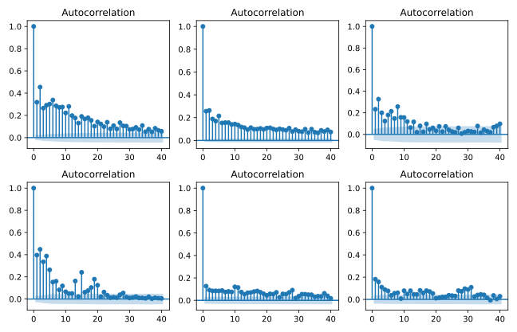

Stock Prices - How do they move?
Christian Duffau-Rasmussen
05-03-2021
Stock prices

Stock prices

Stock prices

The Efficient Market Hypothesis
A market in which prices always “fully reflect” available information is called “efficient”.
The Efficient Market Hypothesis
E[Pt + 1|Φt] = Pt + E[rt + 1|Φt]Pt
- Pt: Price at time t
- rt: Return from t − 1 to t
- Φt: The available information at time t
The Random Walk Hypothesis
Pt = M + Pt − 1 + rt
- rt : Is “white noise” (i.i.d., mean zero)
- M: Is the risk free return
The Random Walk Hypothesis
<Live simulation>
The Random Walk Hypothesis

The Random Walk Hypothesis

Dickey-Fuller test
Pt = M + aPt − 1 + rt
Test if a = 1
Survey of securities
10 random securities from:
- Index (e.g. S&P 500)
- ETF’s
- Mutual funds (“investeringsforening”)
- Stocks
- Currencies
Results
Autocorrelation
 Returns
Returns
Autocorrelation
acfk(Pt) = corr(Pt, Pt − k)
Autocorrelation
 ACF of returns
ACF of returns
Autocorrelation
ACF of returns squared